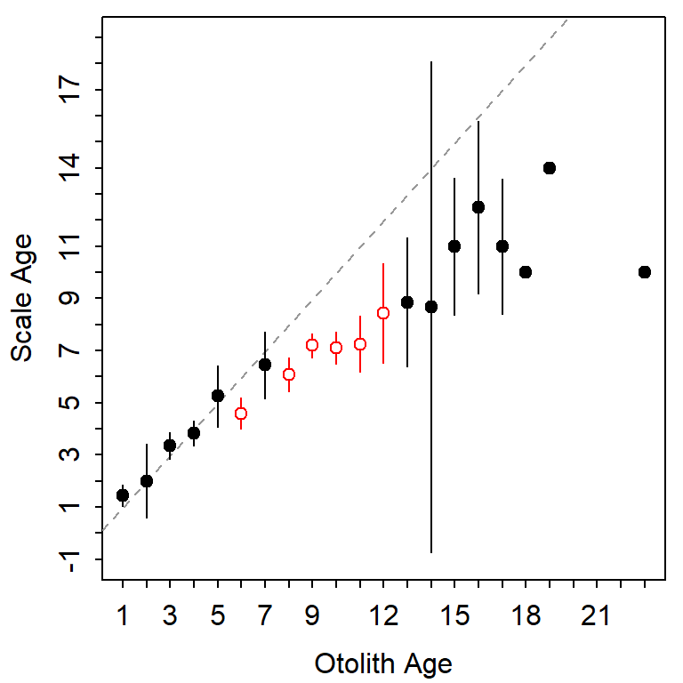
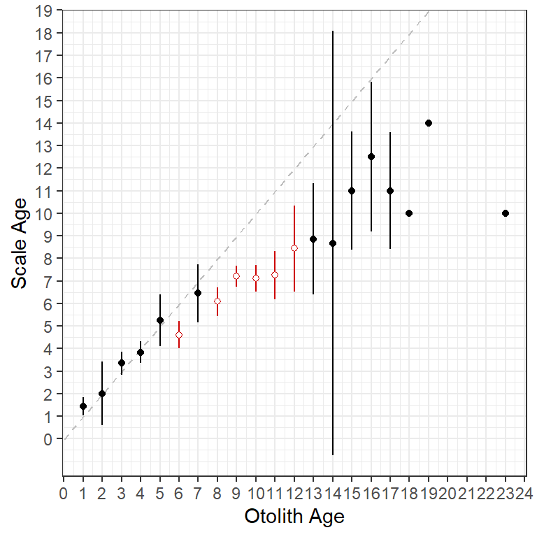
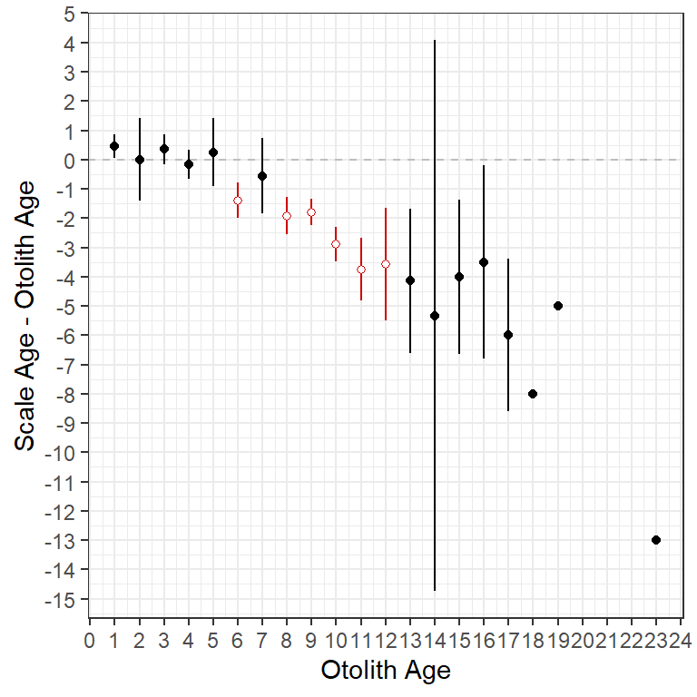
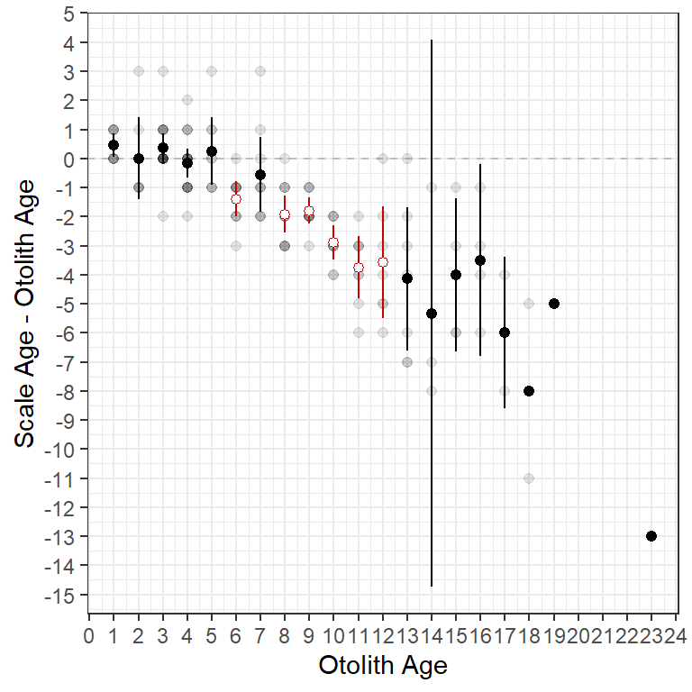
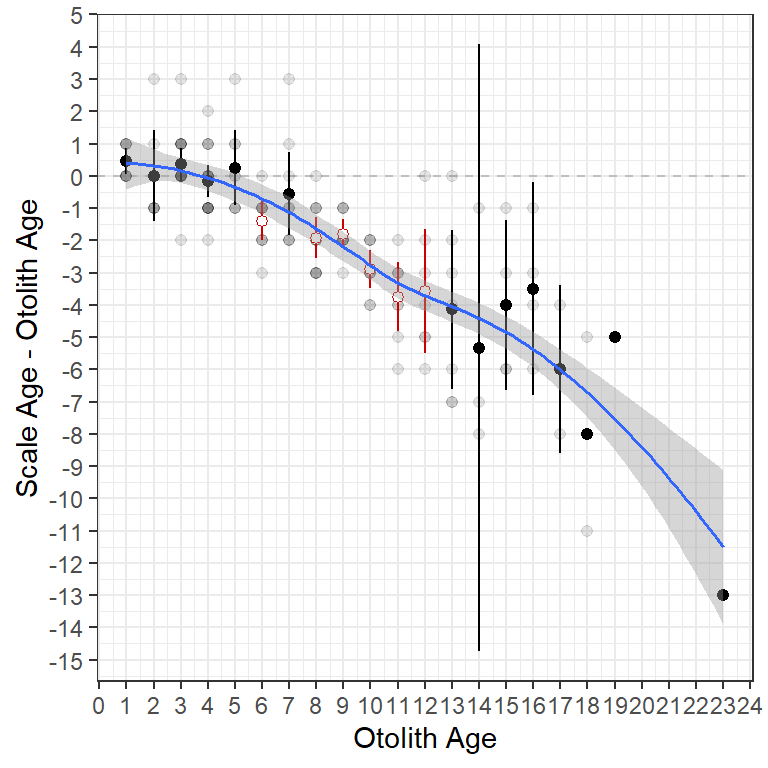
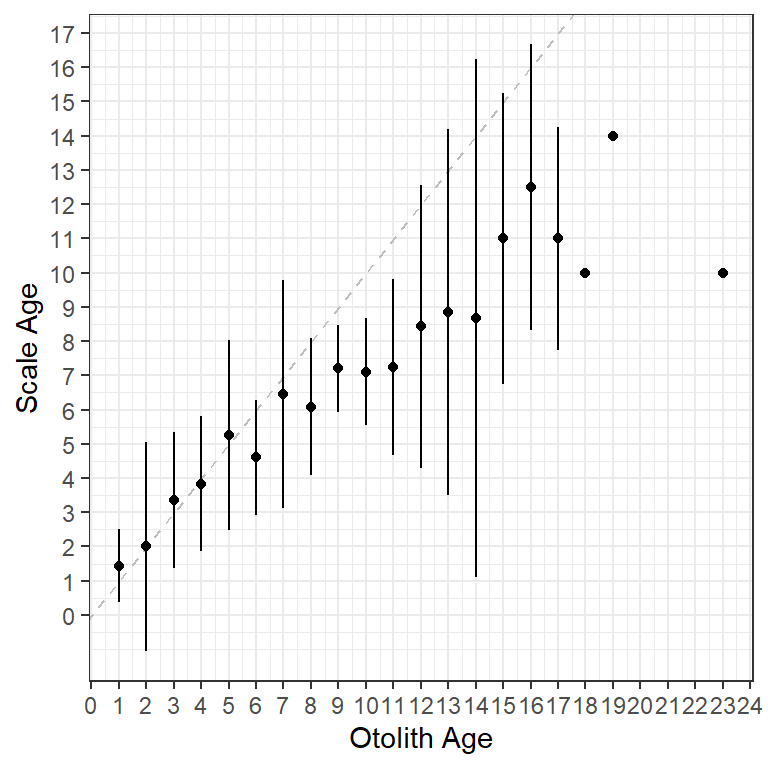
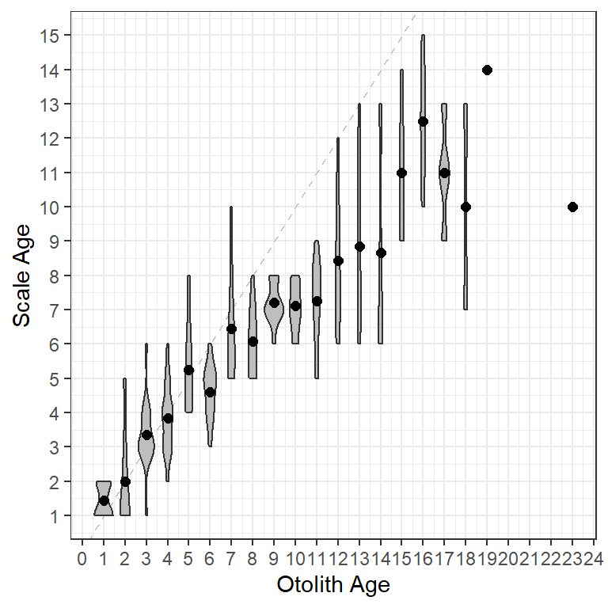

library(FSA)
library(dplyr)
library(ggplot2)
theme_set(theme_bw())
Note
The following packages are loaded for use below. I also set the default ggplot theme to theme_bw() for a classic “black-and-white” plot (rather than the default plot with a gray background).
Introduction
Age-bias and difference plots can be constructed with plot() and plotAB() in the FSA package. However, these types of plots can be more flexibly constructed using ggplot2. Below I will use ggplot2 to recreate many of the plots shown in the documentation for plot() and plotAB().
Data
The WhitefishLC data frame from FSA.1 contains age readings made by two readers on scales, fin rays, and otoliths, along with consensus readings for each structure.
1 These data are loaded automatically with library(FSA).
head(WhitefishLC)#R> fishID tl scale1 scale2 scaleC finray1 finray2 finrayC otolith1 otolith2
#R> 1 1 345 3 3 3 3 3 3 3 3
#R> 2 2 334 4 3 4 3 3 3 3 3
#R> 3 3 348 7 5 6 3 3 3 3 3
#R> 4 4 300 4 3 4 3 2 3 3 3
#R> 5 5 330 3 3 3 4 3 4 3 3
#R> 6 6 316 4 4 4 2 3 3 6 5
#R> otolithC
#R> 1 3
#R> 2 3
#R> 3 3
#R> 4 3
#R> 5 3
#R> 6 6Intermediate and summary statistics for the comparison of paired ages (e.g., between consensus scale and otolith ages) can be extracted from the objected returned by ageBias() from FSA.2
2 As described in the documentation.
ab1 <- ageBias(scaleC~otolithC,data=WhitefishLC,
ref.lab="Otolith Age",nref.lab="Scale Age")For example, the $data object of ab13 contains the original paired age estimates, the differences between those two estimates, and the mean of those two estimates.
3 ab1 because that was the name assigned to the results from ageBias() in this example.
head(ab1$data)#R> scaleC otolithC diff mean
#R> 1 3 3 0 3.0
#R> 2 4 3 1 3.5
#R> 3 6 3 3 4.5
#R> 4 4 3 1 3.5
#R> 5 3 3 0 3.0
#R> 6 4 6 -2 5.0In addition, the $bias object of ab1 contains summary statistics of ages for the first structure given in the ageBias() formula by each age of the second structure given in that formula. For example, the first row below gives the number, minimum, maximum, mean, and standard error of the scale ages that were paired with an otolith age of 1. Additionally there is a t-test, adjusted p-value, and a significance statement for testing whether the mean scale age is different from the otolith age. Finally, confidence intervals (defaults to 95%) for the mean scale age at an otolith age of 1 is given, with a statement about whether a confidence interval could be calculated.4
4 See the documentation for ageBias() for the criterion used to decide if the confidence interval can be calculated.
head(ab1$bias)#R> otolithC n min max mean SE t adj.p sig LCI
#R> 1 1 9 1 2 1.444444 0.1756821 2.5298218 0.28212 FALSE 1.0393208
#R> 2 2 7 1 5 2.000000 0.5773503 0.0000000 1.00000 FALSE 0.5872748
#R> 3 3 17 1 6 3.352941 0.2416423 1.4605937 0.81743 FALSE 2.8406824
#R> 4 4 18 2 6 3.833333 0.2322102 -0.7177407 1.00000 FALSE 3.3434126
#R> 5 5 8 4 8 5.250000 0.4909902 0.5091751 1.00000 FALSE 4.0889926
#R> 6 6 10 3 6 4.600000 0.2666667 -5.2500003 0.00686 TRUE 3.9967581
#R> UCI canCI
#R> 1 1.849568 TRUE
#R> 2 3.412725 TRUE
#R> 3 3.865200 TRUE
#R> 4 4.323254 TRUE
#R> 5 6.411007 TRUE
#R> 6 5.203242 TRUEThe results in $bias.diff are similar to those for $bias except that the difference in age between the two structures is summarized for each otolith age.
head(ab1$bias.diff)#R> otolithC n min max mean SE t adj.p sig LCI
#R> 1 1 9 0 1 0.4444444 0.1756821 2.5298218 0.28212 FALSE 0.03932075
#R> 2 2 7 -1 3 0.0000000 0.5773503 0.0000000 1.00000 FALSE -1.41272519
#R> 3 3 17 -2 3 0.3529412 0.2416423 1.4605937 0.81743 FALSE -0.15931758
#R> 4 4 18 -2 2 -0.1666667 0.2322102 -0.7177407 1.00000 FALSE -0.65658738
#R> 5 5 8 -1 3 0.2500000 0.4909902 0.5091751 1.00000 FALSE -0.91100742
#R> 6 6 10 -3 0 -1.4000000 0.2666667 -5.2500003 0.00686 TRUE -2.00324188
#R> UCI canCI
#R> 1 0.8495680 TRUE
#R> 2 1.4127252 TRUE
#R> 3 0.8652000 TRUE
#R> 4 0.3232540 TRUE
#R> 5 1.4110074 TRUE
#R> 6 -0.7967581 TRUEThese data frames are used in ggplot2 code below to create various versions of age-bias and difference plots.
Important
At times multiple data frames will be used when constructing the same plot so that layers of the plot can have different variables.
Basic Age-Bias Plot
Figure 1 is the age-bias plot created by default by plotAB() from FSA.
FSA::plotAB(ab1)
plotAB() in FSA.
Figure 1 is largely recreated (Figure 2) with the following ggplot2 code.
ggplot(data=ab1$bias) +
geom_abline(slope=1,intercept=0,linetype="dashed",color="gray") +
geom_errorbar(aes(x=otolithC,ymin=LCI,ymax=UCI,color=sig),width=0) +
geom_point(aes(x=otolithC,y=mean,color=sig,fill=sig),shape=21) +
scale_fill_manual(values=c("FALSE"="black","TRUE"="white"),guide="none") +
scale_color_manual(values=c("FALSE"="black","TRUE"="red3"),guide="none") +
scale_x_continuous(name=ab1$ref.lab,breaks=0:25) +
scale_y_continuous(name=ab1$nref.lab,breaks=0:25)
ggplot2.The specifics of the code above are described below.
- The base data used in this plot is the
$biasdata.frame discussed above. - The 45o agreement line (i.e., slope of 1 and intercept of 0) is added with
geom_abline(), using a dashedlinetype=and a graycolor=. This “layer” is first so that it sits behind the other results. - Error bars are added with
geom_errorbar(). Theaes()thetics here map the consensus otolith age to thex=axis and the lower and upper confidence interval values for the mean consensus scale age at each consensus otolith age toymin=andymax=. Thecolor=of the lines are mapped to thesigvariable so that points that are significantly different from the 45o agreement line will have a different color (withscale_color_manual()described below). Finally,width=0assures that the error bars will not have “end caps.” - Points at the mean consensus scale age (
y=) for each otolith age (x=) are added withgeom_point(). Again, thecolor=andfill=are mapped to thesigvariable so that they will appear different depending on whether the points are significantly different from the 45o agreement line or not. Finally,shape=21represents a plotted point as an open circle that is outlined withcolor=and filled withfill=. scale_fill_manual()andscale_color_manual()are used to set the colors and fills for the levels in thesigvariable. Note thatguide="none"is used so that a legend is not constructed for the colors and fills.scale_x_continuous()andscale_y_continuous()are used to set the labels (withname=) and axis breaks for the x- and y-axes, respectively. The names are drawn from labels that were given in the original call toageBias()and stored inab1.
The gridlines and the size of the fonts could be adjusted by modifying theme theme, which I did not do here for simplicity.
More Examples
Below are more examples of how ggplot2 can be used to recreate graphs from plot() in FSA. For example, Figure 3 is similar to Figure 2, but uses $bias.diff from ab1 to plot mean differences between scale and otolith ages against otolith ages. The reference for differences is a horizontal line at 0 so geom_abline() from above was replaced with geom_hline() here.
ggplot(data=ab1$bias.diff) +
geom_hline(yintercept=0,linetype="dashed",color="gray") +
geom_errorbar(aes(x=otolithC,ymin=LCI,ymax=UCI,color=sig),width=0) +
geom_point(aes(x=otolithC,y=mean,color=sig,fill=sig),shape=21) +
scale_fill_manual(values=c("FALSE"="black","TRUE"="white"),guide="none") +
scale_color_manual(values=c("FALSE"="black","TRUE"="red3"),guide="none") +
scale_x_continuous(name=ab1$ref.lab,breaks=0:25) +
scale_y_continuous(name=paste(ab1$nref.lab,"-",ab1$ref.lab),breaks=-15:5)
ggplot2.
Figure 4 is similar but it includes the raw data points from $data and colors the mean (and confidence intervals) for the differences based on the significance as in Figure 2. Because data were drawn from different data frames (i.e., ab1$data and ab1$bias.diff) the data= and aes= arguments had to be moved into the specific geom_s. Also note that the raw data were made semi-transparent (with alpha=0.1) to emphasize the over-plotting of the discrete ages.
ggplot() +
geom_hline(yintercept=0,linetype="dashed",color="gray") +
geom_point(data=ab1$data,aes(x=otolithC,y=diff),alpha=0.1,size=1.75) +
geom_errorbar(data=ab1$bias.diff,aes(x=otolithC,ymin=LCI,ymax=UCI,color=sig),
width=0) +
geom_point(data=ab1$bias.diff,aes(x=otolithC,y=mean,color=sig,fill=sig),
shape=21,size=1.75) +
scale_fill_manual(values=c("FALSE"="black","TRUE"="white"),guide="none") +
scale_color_manual(values=c("FALSE"="black","TRUE"="red3"),guide="none") +
scale_x_continuous(name=ab1$ref.lab,breaks=seq(0,25,1)) +
scale_y_continuous(name=paste(ab1$nref.lab,"-",ab1$ref.lab),breaks=-15:5)
ggplot2 including points for individual observations.
Figure 5 is the same as Figure 4 except that a loess smoother has been added with geom_smooth() to emphasize the trend in the differences in ages. The smoother should be fit to the raw data so be sure to use ab1$data in geom_smooth(). The smoother defaults to blue (as shown here) but I decreased the width of the line slightly with linewidth=0.65.
ggplot() +
geom_hline(yintercept=0,linetype="dashed",color="gray") +
geom_point(data=ab1$data,aes(x=otolithC,y=diff),alpha=0.1,size=1.75) +
geom_errorbar(data=ab1$bias.diff,aes(x=otolithC,ymin=LCI,ymax=UCI,color=sig),
width=0) +
geom_point(data=ab1$bias.diff,aes(x=otolithC,y=mean,color=sig,fill=sig),
shape=21,size=1.75) +
scale_fill_manual(values=c("FALSE"="black","TRUE"="white"),guide="none") +
scale_color_manual(values=c("FALSE"="black","TRUE"="red3"),guide="none") +
scale_x_continuous(name=ab1$ref.lab,breaks=seq(0,25,1)) +
scale_y_continuous(name=paste(ab1$nref.lab,"-",ab1$ref.lab),breaks=-15:5) +
geom_smooth(data=ab1$data,aes(x=otolithC,y=diff),linewidth=0.65)
ggplot2 including points for individual observations and a loess smoother.
What Prompted This
Graphics made in ggplot2 are more flexible than the ones produced in FSA. For example, a user recently asked if it was possible to make an “age-bias plot” that used “error bars” based on the standard deviation rather than the standard error. While it is questionable whether this is what should be plotted, it is nevertheless up to the user and their use case. Because this cannot be done using the plots in FSA we turned to ggplot to make such a graph.
Standard deviations are not returned in any of the ageBias() results (saved in ab1). However, the standard error and sample size are returned in the $bias data frame. The standard deviation can be “back-calculated” from these two values using SD=SE*sqrt(n). Two new variables called LSD and USD that are the means minus and plus two standard deviations can then be created. All three of these variables are added to the $bias data frame using mutate() from dplyr.
ab1$bias <- ab1$bias %>%
mutate(SD=SE*sqrt(n),
LSD=mean-2*SD,
USD=mean+2*SD)A plot (Figure 6) like the very first plot above but using two standard deviations for the error bars is then created by mapping ymin= and ymax= to LSD and USD, respectively, in geom_errorbar(). Note that I removed the color related to the significance test as those don’t pertain to the results when using standard deviations to represent “error bars.”
ggplot(data = ab1$bias)+
geom_abline(slope=1,intercept=0,linetype="dashed",color="gray") +
geom_errorbar(aes(x=otolithC,ymin=LSD,ymax=USD),width=0) +
geom_point(aes(x=otolithC,y=mean)) +
scale_x_continuous(name =ab1$ref.lab,breaks=0:25) +
scale_y_continuous(name=ab1$nref.lab,breaks=0:25)
Finally, to demonstrate the flexibility of using ggplot with these type of data, I used a violin plot to show the distribution of scale ages for each otolith age while also highlighting the mean scale age for each otolith age (Figure 7). The violin plots are created with geom_violin() using the raw data stored in $data. The group= must be set to the x-axis variable (i.e., otolith age) so that a separate violin will be constructed for each age on the x-axis. I filled the violins with grey to make them stand out more.
ggplot() +
geom_abline(slope=1,intercept=0,linetype="dashed",color="gray") +
geom_violin(data=WhitefishLC,aes(x=otolithC,y=scaleC,group=otolithC),
fill="grey") +
geom_point(data=ab1$bias,aes(x=otolithC,y=mean),size=2) +
scale_x_continuous(name=ab1$ref.lab,breaks=0:25) +
scale_y_continuous(name=ab1$nref.lab,breaks=0:25)
Reuse
Citation
BibTeX citation:
@online{lant2021,
author = {Michael Lant},
title = {Age {Bias} {Plots} in Ggplot2},
date = {2021-03-15},
url = {https://fishr-core-team.github.io/fishR//blog/posts/2021-3-15-AgeBiasPlots},
langid = {en}
}
For attribution, please cite this work as:
Michael Lant. 2021. “Age Bias Plots in Ggplot2.” March 15,
2021. https://fishr-core-team.github.io/fishR//blog/posts/2021-3-15-AgeBiasPlots.